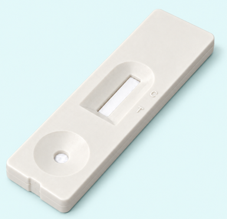

'yelloi' 님 환영합니다.
반응 대기 시간을 설정하고확인 버튼을 눌러주세요.
남은 시간
* 반응 대기 시간이 끝나면 자동으로촬영 화면으로 넘어 갑니다.
Kit를 카메라 영역에 맞추어 주세요
Kit가 카메라 영역에 재대로 들어왔나요?
User_ID : yelloi 님
AI 분석 중...
잠시만 기다려 주세요
Green Channel (530nm)
Apps Script를 [웹 앱]으로 배포한 후 발급받은 URL을 입력하세요. 검사 시 실시간 자동 동기화됩니다.
시트 ID: 1ckyAywMytLJCClUgwizQakq5xdQmm_5fNeQYSW4S3jo